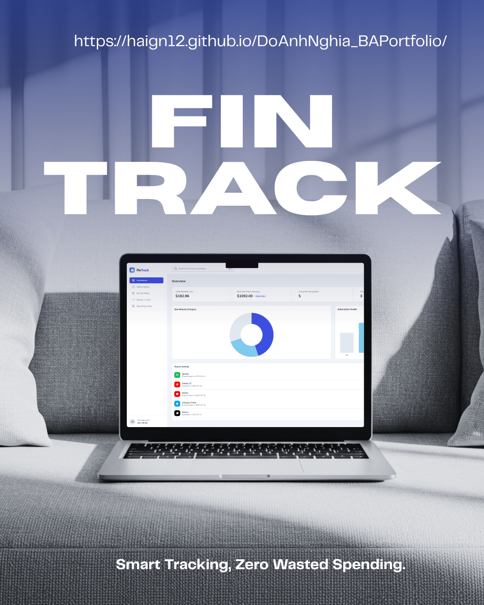
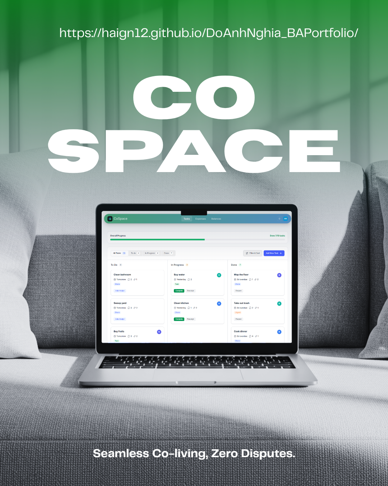
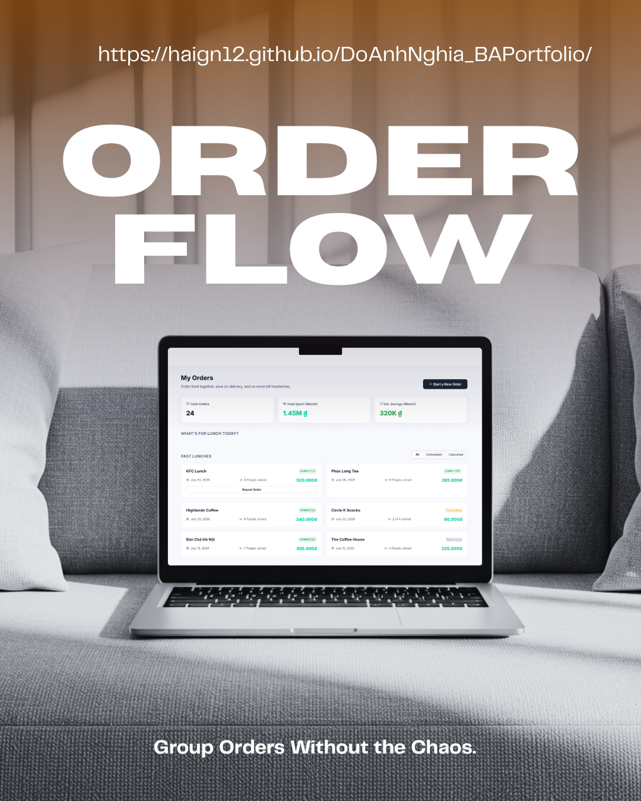
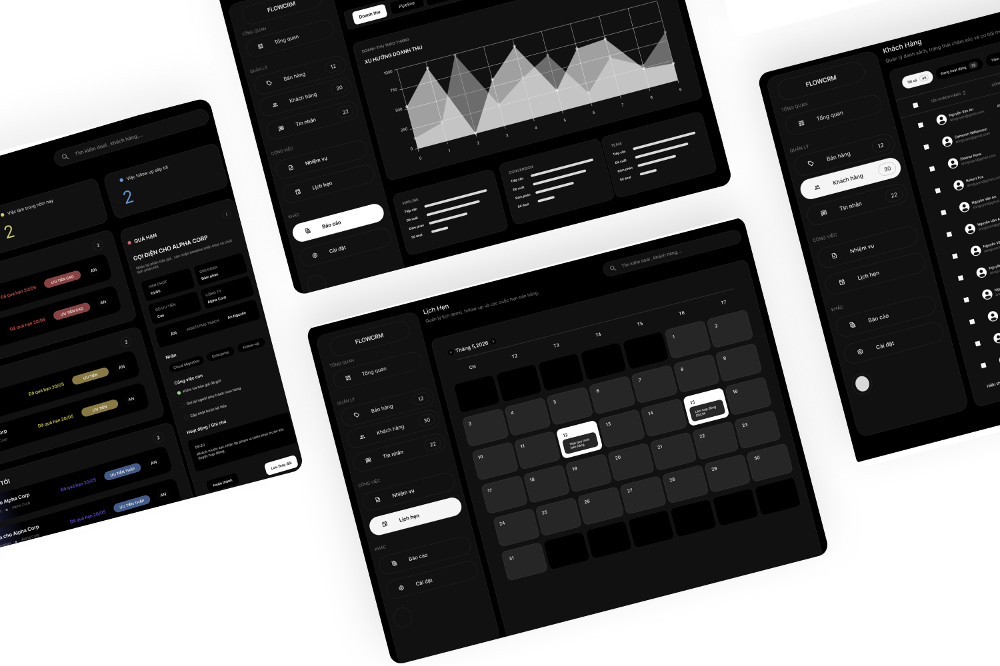
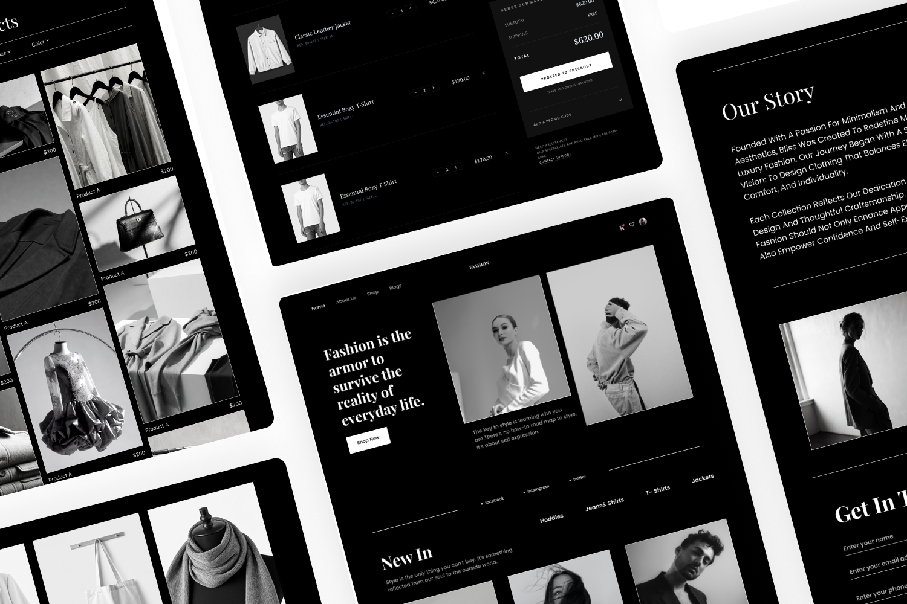
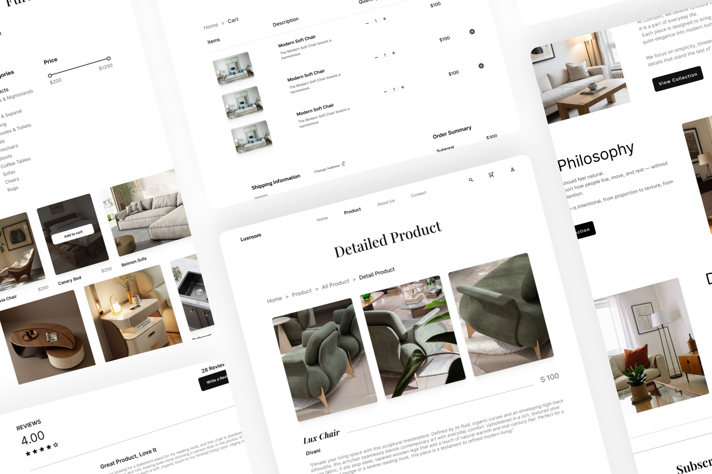

01Business Analysis2024 — 2026
FinTrack
Theo dõi chi tiêu và gói đăng ký — biến dữ liệu cá nhân thành một hệ thống giúp nhìn thấy những khoản chi đang bị bỏ quên.
~5%chi phí cố định được tối ưu trong pilot 3 tháng
IT BUSINESS ANALYST × UI/UX DESIGNER
Mình biến những yêu cầu doanh nghiệp phức tạp thành logic rõ ràng, quy trình có thể triển khai và giao diện người dùng dễ hiểu.
BA / UX
Logic
meets
empathy.
01 / GIỚI THIỆU
Một hệ thống tốt không chỉ hoạt động đúng. Nó phải giúp con người hiểu mình đang làm gì, vì sao họ làm điều đó và bước tiếp theo là gì.
Với nền tảng Business Analysis và UI/UX, mình kết nối nhu cầu của stakeholder, logic của sản phẩm và trải nghiệm của người dùng trong cùng một quy trình. Mình quan tâm đến những câu hỏi phía sau giao diện: dữ liệu đi đâu, quyết định được đưa ra như thế nào và làm sao để sản phẩm tạo ra giá trị thật.
02 / SELECTED WORK
Mỗi dự án bắt đầu từ một vấn đề cụ thể và kết thúc bằng một kết quả có thể giải thích.
BA / 03 PROJECTS
Ba case study về dữ liệu, quy trình và quyết định vận hành.

01Theo dõi chi tiêu và gói đăng ký — biến dữ liệu cá nhân thành một hệ thống giúp nhìn thấy những khoản chi đang bị bỏ quên.

02Mô hình hóa trạng thái đặt phòng và thiết kế dashboard để thay thế dữ liệu phân tán bằng một luồng vận hành thống nhất.

03Mô hình hóa quy trình đặt đồ ăn nhóm từ As-is đến To-be, rồi chuyển hóa nó thành một trải nghiệm theo dõi đơn hàng đơn giản.
UI/UX / 03 PROJECTS
Ba hệ thống UI/UX tập trung vào hierarchy, trải nghiệm và tính ứng dụng.

Dashboard B2B tập trung vào báo cáo tự động, quản lý người dùng và hierarchy thông tin.

Ứng dụng thời trang ưu tiên visual elegance và một hành trình mua sắm liền mạch.

Ứng dụng nội thất cao cấp với tone màu đất hiện đại và hierarchy giàu tính biên tập.
03 / BACKGROUND
Kinh nghiệm của mình nằm ở điểm giao giữa yêu cầu kinh doanh, dữ liệu và giao diện.
Kinh nghiệm
TIKERA Technology and Brand Development · Ho Chi Minh City
Trésor Solution Company · Remote
Học vấn & công cụ
04 / CONTACT
Bạn đang tìm một Business Analyst có tư duy hệ thống và hiểu sâu trải nghiệm người dùng? Mình rất vui được nghe về bài toán của bạn.
Gửi email cho mình ↗